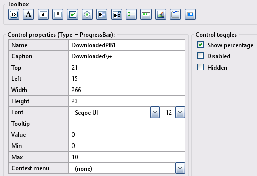
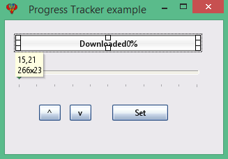

Toolbox Progress-bar
A Progress-bar control in an InForm application presents the user with a visual indication of the progress of an on-going task. This page provides more detailed information about Progress-bar controls.
Progress-bar control
Create a new Progress-bar control by clicking the Progress-bar icon in the Toolbox. The newly created control will be displayed in the preview window; allowing you to move it around to meet your design requirements. Edit the Progress-bar properties as necessary.
10) Progress-bar Properties:
Progress-bar example: Preview window.
Note:Progress-bar properties will reflect the highlighted control selected in the preview window, enabling you to customize it as needed.
A ProgressBar control presents the user with a visual indication of the progress of an ongoing task.
Set its Min and Max properties at design time. Update the ProgressBar Value property at runtime.
If you set its ShowPercentage property to True, you can have the control's Caption property show in the bar's area.
You embed the actual percentage by using the placeholder \#.
Progress-bar example
Specification: Let the progress-bar example have the following design specification:
- Let the progress have a range of 0-10.
- Add two buttons to increment and decrement the progress bar.
- A set button forces the progress bar to 50%.
- Add a Track/Bar slider to increment and decrement the progress bar.
Implimenation: The following provide solutions for the above:
- Set the MIN and MAX properties to 0 and 10, respectively.
- Button hover uses the subroutine __UI_MouseEnter.
- Up, Down, Set, TrackBar, and ProgressBar use the subroutine __UI_Click.
- For additional details, check out Progress_Tracker_example.bas.
- At the layout stage, save the project using File -> Save project as and enter the name Progress_Tracker_example.
Basic file Progress_Tracker_example.bas
': This program uses
': InForm - GUI library for QB64 - v1.5
': Fellippe Heitor, 2016-2024 - fellippe@qb64.org - @fellippeheitor
': https://github.com/FellippeHeitor/InForm
'-----------------------------------------------------------
': Controls' IDs: ------------------------------------------------------------------
Dim Shared ProgressTrackerExample As Long
Dim Shared TrackBar1 As Long
Dim Shared DownloadedPB1 As Long
Dim Shared upBtn As Long
Dim Shared downBtn As Long
Dim Shared setBtn As Long
': External modules: ---------------------------------------------------------------
'$INCLUDE:'InForm\InForm.bi'
'$INCLUDE:'InForm\xp.uitheme'
'$INCLUDE:'Progress_Tracker_example.frm'
': Event procedures: ---------------------------------------------------------------
Sub __UI_BeforeInit
End Sub
Sub __UI_OnLoad
End Sub
Sub __UI_BeforeUpdateDisplay
'This event occurs at approximately 60 frames per second.
'You can change the update frequency by calling SetFrameRate DesiredRate%
End Sub
Sub __UI_BeforeUnload
'If you set __UI_UnloadSignal = False here you can
'cancel the user's request to close.
End Sub
Sub __UI_Click (id As Long)
Select Case id
Case ProgressTrackerExample
Case TrackBar1
Case DownloadedPB1
Case upBtn
If Not (Control(TrackBar1).Value = 10) Then '<---
Control(TrackBar1).Value = Control(TrackBar1).Value + 1 '<---
Control(DownloadedPB1).Value = Control(DownloadedPB1).Value + 1 '<---
End If '<---
Case downBtn
If Not (Control(TrackBar1).Value = 0) Then '<---
Control(TrackBar1).Value = Control(TrackBar1).Value - 1 '<---
Control(DownloadedPB1).Value = Control(DownloadedPB1).Value - 1 '<---
End If '<---
Case setBtn
Control(TrackBar1).Value = 5 '<---
Control(DownloadedPB1).Value = 5 '<---
End Select
End Sub
Sub __UI_MouseEnter (id As Long)
Select Case id
Case ProgressTrackerExample
Case TrackBar1
Case DownloadedPB1
Case upBtn
Case downBtn
Case setBtn
End Select
End Sub
Sub __UI_MouseLeave (id As Long)
Select Case id
Case ProgressTrackerExample
Case TrackBar1
Case DownloadedPB1
Case upBtn
Case downBtn
Case setBtn
End Select
End Sub
Sub __UI_FocusIn (id As Long)
Select Case id
Case TrackBar1
Case upBtn
Case downBtn
Case setBtn
End Select
End Sub
Sub __UI_FocusOut (id As Long)
'This event occurs right before a control loses focus.
'To prevent a control from losing focus, set __UI_KeepFocus = True below.
Select Case id
Case TrackBar1
Case upBtn
Case downBtn
Case setBtn
End Select
End Sub
Sub __UI_MouseDown (id As Long)
Select Case id
Case ProgressTrackerExample
Case TrackBar1
Case DownloadedPB1
Case upBtn
Case downBtn
Case setBtn
End Select
End Sub
Sub __UI_MouseUp (id As Long)
Select Case id
Case ProgressTrackerExample
Case TrackBar1
Control(DownloadedPB1).Value = Control(TrackBar1).Value
Case DownloadedPB1
Case upBtn
Case downBtn
Case setBtn
End Select
End Sub
Sub __UI_KeyPress (id As Long)
'When this event is fired, __UI_KeyHit will contain the code of the key hit.
'You can change it and even cancel it by making it = 0
Select Case id
Case TrackBar1
Case upBtn
Case downBtn
Case setBtn
End Select
End Sub
Sub __UI_TextChanged (id As Long)
Select Case id
End Select
End Sub
Sub __UI_ValueChanged (id As Long)
Select Case id
Case TrackBar1
End Select
End Sub
Sub __UI_FormResized
End Sub
'$INCLUDE:'InForm/InForm.ui'
Form file Progress_Tracker_example.frm
': This form was generated by
': InForm - GUI library for QB64 - v1.5
': Fellippe Heitor, 2016-2024 - fellippe@qb64.org - @fellippeheitor
': https://github.com/FellippeHeitor/InForm
'-----------------------------------------------------------
SUB __UI_LoadForm
DIM __UI_NewID AS LONG, __UI_RegisterResult AS LONG
__UI_NewID = __UI_NewControl(__UI_Type_Form, "ProgressTrackerExample", 313, 192, 0, 0, 0)
__UI_RegisterResult = 0
SetCaption __UI_NewID, "Progress Tracker example"
Control(__UI_NewID).Font = SetFont("segoeui.ttf", 12)
Control(__UI_NewID).HasBorder = False
Control(__UI_NewID).CenteredWindow = True
__UI_NewID = __UI_NewControl(__UI_Type_TrackBar, "TrackBar1", 266, 40, 15, 62, 0)
__UI_RegisterResult = 0
Control(__UI_NewID).HasBorder = False
Control(__UI_NewID).Max = 10
Control(__UI_NewID).CanHaveFocus = True
Control(__UI_NewID).Interval = 1
__UI_NewID = __UI_NewControl(__UI_Type_ProgressBar, "DownloadedPB1", 266, 23, 15, 21, 0)
__UI_RegisterResult = 0
SetCaption __UI_NewID, "Downloaded\92;#"
Control(__UI_NewID).HasBorder = False
Control(__UI_NewID).Max = 10
Control(__UI_NewID).ShowPercentage = True
__UI_NewID = __UI_NewControl(__UI_Type_Button, "upBtn", 31, 23, 49, 121, 0)
__UI_RegisterResult = 0
SetCaption __UI_NewID, "^"
Control(__UI_NewID).HasBorder = False
Control(__UI_NewID).CanHaveFocus = True
__UI_NewID = __UI_NewControl(__UI_Type_Button, "downBtn", 31, 23, 93, 121, 0)
__UI_RegisterResult = 0
SetCaption __UI_NewID, "v"
Control(__UI_NewID).HasBorder = False
Control(__UI_NewID).CanHaveFocus = True
__UI_NewID = __UI_NewControl(__UI_Type_Button, "setBtn", 80, 23, 154, 121, 0)
__UI_RegisterResult = 0
SetCaption __UI_NewID, "Set"
Control(__UI_NewID).HasBorder = False
Control(__UI_NewID).CanHaveFocus = True
END SUB
SUB __UI_AssignIDs
ProgressTrackerExample = __UI_GetID("ProgressTrackerExample")
TrackBar1 = __UI_GetID("TrackBar1")
DownloadedPB1 = __UI_GetID("DownloadedPB1")
upBtn = __UI_GetID("upBtn")
downBtn = __UI_GetID("downBtn")
setBtn = __UI_GetID("setBtn")
END SUB